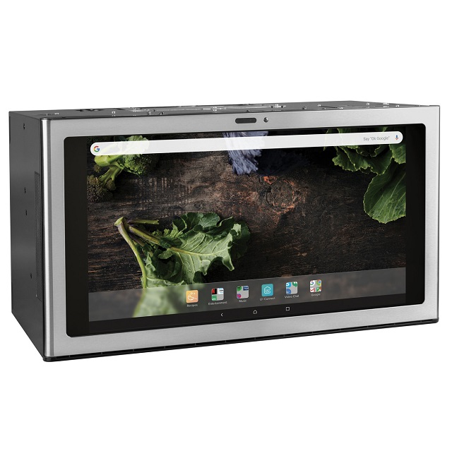

Let’s Be Innovative!¶
{kind=link}
Your department has undergone another re-organization because … actually it doesn’t matter. The goal was to step-change the innovation culture so that your company can quickly deliver world-class experiences that delight your customers and exceed their expectations.
Sound familiar? Depressingly familiar? Wasn’t this supposed to be one of the outcomes of the last reorganization? What happened?
First, take heart. Leadership doesn’t wake up one morning and decide on how to make things worse. There is a genuine desire to make things better - what’s missing sometimes is asking the hard questions that drive change in the right direction.
Let’s have a look at why innovation is so hard to achieve in some business environments, and what we can do to turn things around. This is definitely not a list of “5 Easy Ways To Innovate” - it’s more about taking stock of where your organization is today, and deciding on the first steps towards where you want it to be.
What is Innovation?¶
One way to think about innovation is the combination of two or more well known ideas into something new. Notice that I used ideas - not technologies, or applications, or processes, or even customer requests. An idea can be any of these things and more.
Innovation is hybrid of research and development. It’s a place where you need to be able to test if two or more ideas can be combined (research) and then convert that into a product or a component that can be used in a product (development). More on this distinction in another article.
Before a company can improve its innovation capabilities, it’s a good idea to understand how innovative it is right now. Here’s a little table that can be used as inspiration:
Risk |
How are we managing risk - is there a process to mature new ideas or are we hoping for success by doing research while we are developing the product? |
Focus |
Are we assuming innovation is something everyone is supposed to do or is there a more formal innovation process or team? |
Profile |
Are we rotating people into innovation projects based only on their skills or are we also ensuring they have an innovation mindset? |
One of the biggest sources of failure for companies that want to be innovative is to ignore the difference between research and development. Innovation is not about taking risks and hoping for a good outcome - it’s about evaluating and being realistic about risks and rewards as you learn more about your product and its market.
Putting a focused team on innovation might seem like a bad idea - after all who doesn’t want to be innovative? If innovation is one of your KPIs or OKRs across multiple functions, it can set your teams up for intense competition for budget, people, and recognition. That’s why it’s a good idea to rotate people into an innovation team beased on their profile and also their interest in the problem being researched.
I often hear leaders talk about the Apollo program (they usually mean all the programs leading up to putting a human on the moon). You will often hear about “moonshot” programs, or “reach for the stars and you will get to the moon”. The Apollo program was not built on hopes and dreams. It was accomplished with the help of great leadership, separating financial from technical decisions, building risky components in parallel using different technologies to minimize dependencies, and instilling a sense of a common goal with joint responsibility for the very clear outcome of the program.
The Apollo program was an extremely expensive way to get things done and is a perfect example of the iron triangle of project management. Delivering a high quality product in a very short time will cost a lot of money. The program also had its share of failure and disappointment along the way, but it also had at its core a shared vision and motivated, dedicated staff.
Innovation Is Steady Progress¶
{kind=link}

Innovation can be risky, it’s just common business sense to not put all your eggs in one basket. This story might make the point clear.
Let’s say your business is consumer goods, specifically cooking appliances like residential stoves. For years families cooked on two main types of heat - gas or electric. Gas burners have not changed much over the years. They are hard to keep clean and waste a lot of energy by allowing the heat of the flame to escape around the side of the pot. Chefs love gas because they can quickly change the heat reaching the food by adjusting the flame.
Electric burners have not changed very much either. They are electric coils that basically heat up your pot from underneath. The knobs on the stove regulate the temperature by turning the supply of electricity fully on and off as needed to maintain a temperature. The coils are easy to remove and replace but hard to clean and require an opening in the stove top which can make spills really messy.
For a while solid electric elements were popular because they looked easy to clean but they had so much thermal mass that it was almost impossible to control the heat quickly - plus they looked ugly and stayed hot for a long time.
Then came Schott Ceran - a miracle material that allows extreme heat under the glass, and magically keeps most of the heat from spreading to the entire surface. It’s also very strong and durable and is easy to clean.
So far, so good. The other half of this story is induction heating which has been around since Michael Faraday’s time. The first patents for induction cooking were issued around 1909, and Frigidaire had a practical demonstration stove as early as the 1950’s. Westinghouse produced the “Cool Top 2” induction stove for about 2 years in the 1970’s, and it cost about USD 8,260 in 2017 dollars!
The idea of induction cooking has a number of really big advantages including a one-piece spill-proof top, easy cleanup if something does spill or boil over, amazingly low heat transfer through the glass material, and high energy efficiency. The disavantage is that it really only works well with steel, iron, and some types of stainless steel pots.
What does this have to do with innovation? Both technologies had been around for a long time but induction remained a very expensive option that only a few could afford. As late as 2012 less than 5% of homes in the US had an induction cooktop, but the number is changing rapidly - the acceptance has hit an inflection point.
The innovation was a combination of detailed market analysis, relentless cost reduction, experimenting with manufacturing processes, and modern touch sensitive controls that further reduced the visual complexity of the cooktop. It used very powerful word-of-mouth endorsements as fuel for the marketing engine, and appealed to families that were trying to take advantage of a more streamlined look in their new or renovated kitchen.
Here’s the point of the story - no appliance manufacturer decided to be super “innovative” and bet the farm on induction cook tops. That’s gambling. Instead a few industry leaders that had effective research and development areas built a limited number of units for sale knowing that they had to educate users and appliance service people, knowing that they would most likely accept lower (hopefully not negative) net revenue, and knowing that going all in and putting too many early production cooktops in homes could lead to a PR nightmare.
Conclusion¶
Innovation in a company that has a well-understood business model and product assortment respects that existing sales fund the research and development needed to drive innovation. These companies continue to innovate on the existing products in terms of features, cost reduction of components, improving reliability, and simplifying the production and serviceability of their products. They continue to market innovations on existing products by doing experiments on financing, service agreements, providing incentive programs to their sales channels, and so on.
Remember the Westinghouse Cool Top 2? It was only produced for 2 years in the 70’s. It was expensive and ahead of its time. Westinghouse continued to sell their conventional appliances because they knew that they could not bet the business on an appliance that only a few people could ever afford.
Eventually market conditions changed, key electronic components became less expensive, and finally there were enough induction cooktops in the market to hit a point where they were not unusual or exclusive.
Long story short, don’t ignore your core business when striving to be innovative. Respect your existing product line and remember that innovation comes after your research department has matured an idea to the point where your development teams can mature the idea into a new or existing product.